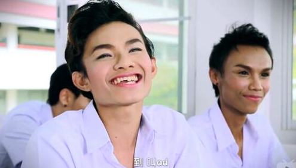

【同声传译】男同文化中有厌女情节吗？
Owen旭 译自New Republic Dec. 15, 2014
男同与直女经常被简单地描述为坚不可摧的盟友关系，但这种关系最近成为了一些争论的主题。女演员Rose McGowan是这些争论的挑起者之一，她上个月形容男同性恋“在厌女情节上至少跟直男是不相上下的，甚至可能更为严重”，批评男同性恋在女性权益上的不作为。而最近，饶舌歌手Azealia Banks又在与博客写手Perez Hilton在twitter上激烈骂战时引用了McGowan的评论，并把“faggot”这个对男同的侮辱性称呼重新定义为“任何厌恶女性的男性”加在PerezHilton身上。
虽然两位女士都因为她们的言论受到批评，但想要完全驳倒她们的批评仍然是很难的。在“男同群体通常无视其他受压迫的群体的权利”这个看法上，McGowan拥有众多拥趸。Perez对著名女性的衣着、妆容和生活方式的嘲笑也的确被很多人看作是对女性的蔑视。不得不提的是，LGBT运动自身过去也不止一次的被指责为带有性别歧视性（和种族歧视性），因为在运动中大部分声音和画面都被“更上相的”白人男性所占据。
尽管直女与“gay蜜”之说广为流传，男同对女性的态度以及与女性的关系的确比Will and Grace（美国第一部在黄金时段面向全国播出的以GAY为主角的美剧）里描述的复杂得多。但是，复杂性不能作为同志厌女情节的证据。同志是否有“厌女症”，取决于你如何定义“厌女情节”。

（近期火热的泰剧《不一样的美男》）
显然，男同社群里流传的那些笑话经常带有厌女情节。不管是Hilton的博文里充斥的荡妇污名化的八卦还是对“鲁保罗变装皇后秀”的恶意讨论（类似近期对《不一样的美男》主角的追捧），都体现了男同社群长期参与的“政治不正确”行为，即把女性作为那些“巧词妙语”中的笑柄。当然，厌女情节并不能只靠笑话和幽默来指认，但恐怕任何一个LGBT群体中的人都无法否认这样一些男同的存在：那些社交圈里只有其他男同的人，那些不停的声称女性的身体部位和性征肮脏的人，那些对女同表现出厌恶或者深化对女同的刻板印象、漠视女同的诉求的人，那些在同志社交软件上写着“娘C勿扰”或者更糟糕的“straight acting”的人，那些称呼他们最好的女性朋友“腐女”、经常贬低她们却又拖着她们去gay bar的人。
这只能用野蛮或者原始来形容。并不是所有男同都这样做，甚至大多数男同都不会这样做。但是如果我们知道身边存在这样的人，难道不应该理所应当的停止去认为这些行为可以接受吗？同志运动已经在让大众相信我们是“普通人”这点上取得了巨大的成功，但是这种“同化主义趋势”也带来了副作用——那些主流文化中的糟粕，包括厌女情节。被主流社会接纳常常意味着去迎合社会主流文化的期待，而在这里所指的就是白人异性恋父权文化——这种文化认为女性弱小、情绪化又轻佻。男同社群一直受到“戏剧化”、“感性”和“情绪化”（比如“娘”和“弱小”）的指责和嘲笑，而许多男同却吸收了这种歧视并通过贬低女性来展现他们的“男子气概”，这难道不是很讽刺的吗？
David Thorp在他即将通过IFC/SundanceSelects发布的纪录片《我听起来很gay吗？》里表达了他长期以来对自己声音和说话方式的不安全感。为了找到影响男同人群说话特征的根本原因，他采访了很多同志名流、声音训练师的语言学家，并发现他对“听起来很gay”这个特征的厌恶在其他男同身上也普遍存在。这使得他很快认识到，尝试“解释”男同的共有声音特征这个过程本身就是一种内化的恐同与厌女情节的产物。
如果男同们没有因为在成长过程中因为声调与说话方式遭到如此多的批评甚至霸凌，他们还会觉得对此感到不舒服吗？即使一些人表面上对自己的性取向表示接受，他们在影片中还是透露出了自己的焦虑和不安，比如幽默作家David Sedaris。David Sedaris说，如果有人告诉他之前没有看出来他是同性恋，他会觉得很高兴。他认为造成这种情绪的原因是这种话会让他觉得自己“在男同群体里鹤立鸡群”。

但男同们并没有鹤立鸡群。他们对“超级男子气概”的膜拜，扬“攻”贬“受”的价值观，以及对“女性化的”男同的蔑视存在至今，而这些行为无疑在某种程度上是对他们小时候所受到的恶意评论的回应。对他们来说，把这种自我厌恶与排斥的感觉内化，并努力去证明自己并不是如他人所说的（或者更甚）像其他男同一样“gay”的行为显得理所当然，特别是身处在一个对异性恋文化极为推崇的群体当中时。
但是我们不能忘记仍然有成千上万的男同在行动和信念上强烈地支持女性（比如在他们的政治联盟与选举记录上），并且展现着一种明确的女权主义世界观。因此，区分男同所表现出来的厌女情节和直男的厌女情节是很重要的。后者常常与性骚扰、强奸文化、（对女性的）政治迫害以及暴力联系在一起。而男同的厌女情节更可能是是一种潜意识里渴望被主流文化接受的表现，这些文化不断在告诉他们，“女性化”是一件不好的事，而“做男人”就是要轻视女性和她们的需要。在某种意义上，这是异性恋“更衣室文化”的一种延伸，男同会简单的遵循主流社会对男性的期待（或者是对某种行为的默许）。这种追求与既有性别角色一致的趋势也可以在对男子气概的推崇和变装文化当中体现出来——对一个变装皇后说她很女性化被视作是一种赞美。而一些男同对女同的反感也可以归因于这些女性对性别规范的不合作。
在今天这种性别流动变得普遍、跨性别群体和其他族群得到更多接受的情况下，我们也许可以抛弃那些关于“男性化”与“女性化”的狭隘定义，抛弃男同那些可以从更多隐秘的厌女情节中发现的自我羞耻感。男同性恋们应该不用再担心去拥抱他们的“女性化”表现——毕竟这也是善良与同情心的代名词。“同志骄傲”，应该是无论你的同志身份如何展现都是值得骄傲的，可以接受自己的特质而不需要给它一个标签，就像大多数直女长期以来对男同的态度一样。